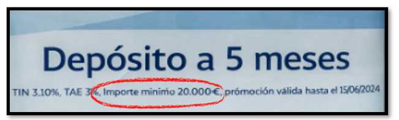
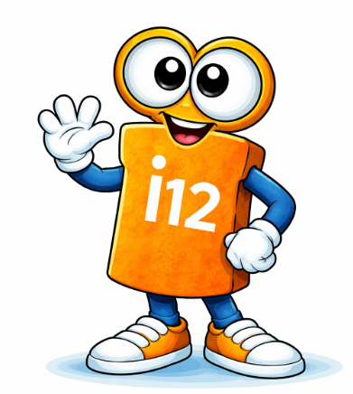
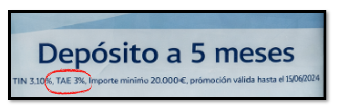
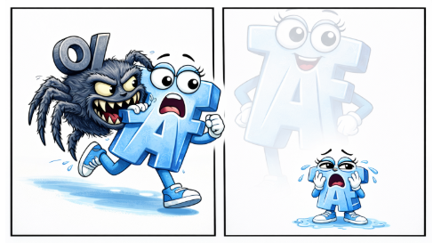

|
👉 En el ejemplo del cartel que venimos manejando, el banco indica que el importe mínimo que puedes invertir es de 20.000 €. Este límite no es casual: al banco le interesa captar ahorro, pero no de cualquier manera. Fijar una cantidad mínima le asegura trabajar con volúmenes suficientemente altos como para que la operación le resulte rentable y eficiente de gestionar. Si permitiera invertir cantidades muy pequeñas, el coste administrativo y operativo podría no compensar los beneficios que obtiene. |
 |
👉 Además, aunque aquí se marque un mínimo, en otros productos también pueden aparecer límites máximos: al banco le interesa atraer dinero… pero también controlar cuánto le cuesta pagar intereses.
Imagina que decides invertir los 20.000 € completos.
| Ves el cartel, lees TIN 3,10 %, |
lo más habitual es hacer una cuenta rápida:
el 3,10 % de 20.000 € son 620 €.
Y aquí aparece el primer error típico: pensar que esos 620 € son lo que vas a ganar por el depósito.
🚨Aquí va la alerta importante:
ese cálculo estaría bien solo si el dinero estuviera invertido un año entero, pero no lo está. El depósito dura 5 meses, no 12. Así que ese 3,10 % hay que ajustarlo al tiempo real.
Hagámoslo correctamente:
| Si el TIN es del 3,10 % anual, el interés correspondiente a cinco meses (i12) es la parte proporcional del año: |  |
3,10 % × 5/12 ≈ 1,2917 %
Ese es el rendimiento real del periodo.
Si aplicamos ese porcentaje a los 20.000 €, el interés que realmente vas a ganar en cinco meses es aproximadamente 258 €.
Es decir, no 620 €, sino 258 €.
Esa es la cifra que encaja con las condiciones reales del producto.
|
Ahora viene el siguiente paso clave: ¿qué TAE corresponde a esta operación? Si anualizamos correctamente ese rendimiento de cinco meses, el resultado sería una TAE en torno al 3,14 %*. |
*Esta operación la podemos hacer fácilmente utilizando un conversor financiero. Por ejemplo te recomiendo el de Gabilos:
Pero.......
el cartel muestra una TAE del 3 %

🚨 y aquí aparece la alerta que conecta con todo lo aprendido antes:
|
cuando la TAE es más baja de lo que “debería” salir solo por intereses y tiempo, es porque hay algún coste que reduce el rendimiento real. Puede tratarse de una comisión de apertura, un gasto de gestión o una condición económica que no aparece destacada en grande. |
Ese coste no cambia el TIN, que sigue siendo del 3,10 %, ni altera la forma en que se calculan los intereses, pero sí reduce lo que tú acabas ganando, y por eso se refleja en la TAE.
Vamos a verlo....
Las Comisiones
Continuando con el ejemplo....
Hemos visto que, invirtiendo 20.000 € durante 5 meses con un TIN del 3,10 %, el interés bruto que genera el depósito es de unos 258 €.
| Ahora imagina que, además, el banco cobra una comisión de apertura de 50 €. |
El interés que se genera no cambia:
el banco sigue aplicando el mismo tipo y los intereses brutos siguen siendo esos 258 €.
Sin embargo, lo que tú te llevas al final sí cambia, porque primero has tenido que pagar esa comisión.
En lugar de ganar 258 €, tu ganancia real se queda en 208 €.
Cuando se tiene en cuenta este coste, el producto ya no rinde lo mismo:
- El tipo de interés nominal sigue siendo del 3,10 %, porque ese número no se ve afectado por la comisión.
- El interés efectivo del periodo refleja el rendimiento real de esos cinco meses, ya reducido por el gasto.
- Y al traducir todo eso a un equivalente anual, la TAE baja de forma clara, situándose aproximadamente en un 2,5 %.
Este resultado es muy ilustrativo: sin tocar el TIN y sin cambiar la duración del depósito, la aparición de un gasto hace que la TAE se reduzca de manera apreciable.

Es justo para esto para lo que sirve la TAE:
Para mostrar de forma clara cuánto rinde realmente una operación cuando se tienen en cuenta el tiempo, los intereses y los costes asociados. Y es también la razón por la que, a la hora de comparar opciones, la TAE suele ser el dato que más conviene mirar.
Cálculo de la TAE en Excel
Llegados a este punto, es normal que te estés haciendo una pregunta muy lógica: vale, ya sé leer la TAE cuando me la dan… pero ¿qué pasa cuando no aparece? ¿Cómo sé entonces si una oferta es buena o no? Porque no siempre te lo ponen tan fácil, y a veces el dato clave no está en grande, o directamente no está.
Ahí es donde entra en juego una herramienta muy básica, pero muy potente: la hoja de cálculo. No para convertirte en experto en finanzas, sino para hacer justo lo que necesitas en estos casos: poner los datos en orden, introducir el tiempo, los intereses y los posibles gastos, y dejar que Excel haga las cuentas por ti.
En el siguiente paso vamos a ver a través de un video con un ejemplo sencillo cómo usar excel para calcular la TAE muy fácilmente y quitarle el misterio a esos números cuando no vienen dados.